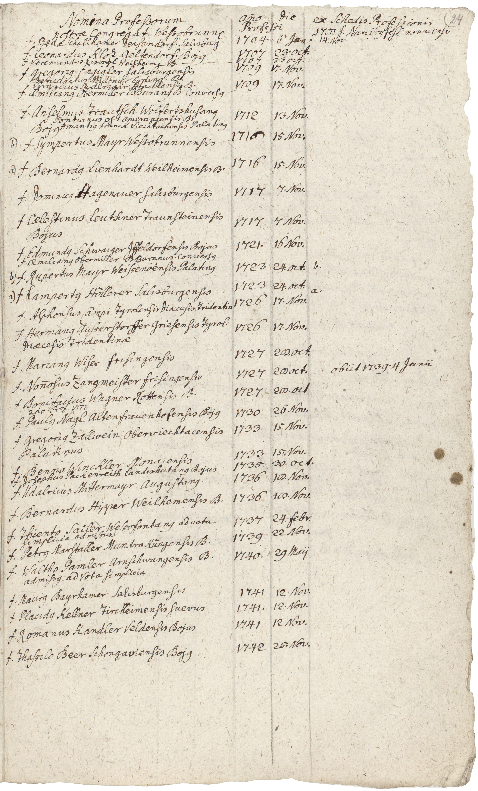

BayHStA, Kloster Wessobrunn Amtsbücher und Akten 704, fol. 24r



Kommentar
BayHStA, Kloster Wessobrunn Amtsbücher und Akten 704, fol. 24r
Professliste des Klosters Wessobrunn, 18. Jahrhundert (vermutlich Wessobrunn)
Professliste des Klosters Wessobrunn, 18. Jahrhundert (vermutlich Wessobrunn)
Archivaliengattung: Amtsbuch
Schwierigkeitsgrad: mittel
Schreiberhände:
- unbekannter Schreiber (S1)
Kommentar
Entzifferung
(Absatz Beginn)
| 3 f(rater) Beda Schallhamer Deisendorf(ensis) Salisburg(ensis) | 1704 | 6 Ian(uarii) | 14. Nov(embris) |
| 4 f(rater) Leonardus Kloz Geltendorf(ensis) Boj(us) | 1707 | 23. Oct(obris) | |
| 5 f(rater) Veremundus Eisvogl Weilheim(ensis) B(ojus) - - - | 1707 | 23 Oct(obris) | |
| 6 f(rater) Gregori(us) Engigler salisburgensis | 1709 | 17. Nov(embris) | |
| 7 Benedictus Millbaur Erding(ensis) B(ojus) | |||
| 8 Virgylius Sedlmair Stadlensis B(ojus) | 1709 | 17. Nov(embris) | |
| 9 f(rater) Aemilian(us) Obermiller B(enedicto)Buran(us) B(ojus) Convers(us) - | |||
| 10 f(rater) Anselmus Trautsch Wolfertshusan(us) | |||
| 11 Pontianus ost Amerangensis B(ojus) | 1712 | 13 Nov(embris) | |
| 12 Boj(us) Amanti(us) Franck Viechtachensis Palatin(us) | |||
| 13 b) f(rater) Sympertus Mayr Wessobrunnensis - | 1716 | 15 Nov(embris) | |
| 14 a) f(rater) Bernard(us) Lienhardt Weilheimensis B(ojus) | 1716 | 15. Nov(embris) | |
| 15 f(rater) Dominic(us) Hagenauer salisburgensis | 1717 | 7. Nov(embris) | |
| 16 f(rater) Caelestinus Leuthner Traunsteinensis 17 Bojus | 1717 | 7 Nov(embris) | |
| 18 f(rater) Edmund(us) Schwaiger Iffeldorfensis Bojus | 1721. | 16 Nov(embris) | |
| 19 f(rater) Aemilian(us) Obermiller B(enedicto)Buranus. Convers(us) | |||
| 20 b) f(rater) Rupertus Mayr Weissenoënsis Palatin(us) | 1723 | 24. oct(obris) | b. |
| 21 a) f(rater) Lampert(us) Höllerer Salisburgensis | 1723 | 24. oct(obris) | a. |
| 22 f(rater) Alphonsus Campi Tyrolensis Diaecesis Tridentin(ae) | 1726 | 17. Nov(embris) | |
| 23 f(rater) Herman(us) Ausserstorffer Griesensis Tyrol(ensis) 24 Diaecesis Tridentinae | 1726 | 17. Nov(embris) | |
| 25 f(rater) Marian(us) Wiser frisingensis | 1727 | 28. oct(obris) | |
| 26 f(rater) No(n)nosus Zangmeister frisingensis | 1727 | 28 oct(obris) | obiit 1739. 4 Iunii |
| 27 f(rater) Bonifacius Wagner Rottensis B(ojus) 28 (secun)do Prof(essio) 1777. | 1727 | 28. oct(obris) | |
| 29 f(rater) Paul(us) Nagl Altenfrauenhofensis Boj(us) | 1730 | 26 Nov(embris) | |
| 30 f(rater) Gregori(us) Zallwein Oberviechtacensis 31 Palatinus | 1733 | 15 Nov(embris) | |
| 32 f(rater) Benno Winckler Monacensis | 1733 | 15. Nov(embris) | |
| 33 f(rater) Iosephus Packenreith Landishutan(us) Bojus | 1735 | 30. Oct(obris) | |
| 34 f(rater) Udalricus Mittermayr Augustan(us) | 1736 | 18. Nov(embris) | |
| 35 f(rater) Bernardus Hipper Weilhemensis B(ojus) | 1736 | 18. Nov(embris) | |
| 36 f(rater) Thiento Sailer Wessonfontan(us) ad vota 37 simplicia admissus. | 1737 | 24. febr(uarii) | |
| 38 f(rater) Petr(us) Marstaller Mundraküngensis B(ojus) | 1739 | 22 Nov(embris) | |
| 39 f(rater) Waltho Pamler Arnschwangensis B(ojus) 40 admiss(us) ad Vota simplicia | 1740. | 29 Maij | |
| 41 f(rater) Maur(us) Bayrhamer Salisburgensis | 1741 | 12 Nov(embris) | |
| 42 f(rater) Placid(us) Kellner Tircheimensis suevus | 1741. | 12. Nov(embris) | |
| 43 f(rater) Romanus Kandler Veldensis Bojus | 1741 | 12 Nov(embris) | |
| 44 f(rater) Thassilo Beer Schongaviensis Boj(us) | 1742 | 25. Nov(embris) |
- Fußnoten
Transkription
(Absatz Beginn)
| 3 frater Beda Schallhamer deisendorfensis Salisburgensis | 1704 | 6. ianuarii | 14. novembris |
| 4 frater Leonardus Kloz geltendorfensis Boius | 1707 | 23. octobris | |
| 5 frater Veremundus Eisvogl weilheimensis Boius | 1707 | 23. octobris | |
| 6 frater Gregorius Engigler Salisburgensis | 1709 | 17. novembris | |
| 7 Benedictus Millbaur erdingensis Boius | |||
| 8 Virgylius Sedlmair Stadlensis Boius | 1709 | 17. novembris | |
| 9 frater Aemilianus Obermiller Benedictoburanus Boius conversus | |||
| 10 frater Anselmus Trautsch Wolfertshusanus | |||
| 11 Pontianus Ost Amerangensis Boius | 1712 | 13. novembris | |
| 12 Boius Amantius Franck Viechtachensis Palatinus | |||
| 13 b) frater Sympertus Mayr Wessobrunnensis - | 1716 | 15. novembris | |
| 14 a) frater Bernardus Lienhardt Weilheimensis Boius | 1716 | 15. novembris | |
| 15 frater Dominicus Hagenauer salisburgensis | 1717 | 7. novembris | |
| 16 frater Caelestinus Leuthner Traunsteinensis 17 Boius | 1717 | 7. novembris | |
| 18 frater Edmundus Schwaiger Iffeldorfensis Boius | 1721 | 16. novembris | |
| 19 frater Aemilianus Obermiller Benedictoburanus conversus | |||
| 20 b) frater Rupertus Mayr Weissenoënsis Palatinus | 1723 | 24. octobris | b. |
| 21 a) frater Lampertus Höllerer Salisburgensis | 1723 | 24. octobris | a. |
| 22 frater Alphonsus Campi Tyrolensis diaecesis Tridentinae | 1726 | 17. novembris | |
| 23 frater Hermanus Ausserstorffer Griesensis Tyrolensis 24 diaecesis Tridentinae | 1726 | 17. novembris | |
| 25 frater Marianus Wiser frisingensis | 1727 | 28. octobris | |
| 26 frater Nonnosus Zangmeister frisingensis | 1727 | 28. octobris | obiit 1739 4. iunii |
| 27 frater Bonifacius Wagner Rottensis Boius 28 secundo professio 1777 | 1727 | 28. octobris | |
| 29 frater Paulus Nagl Altenfrauenhofensis Boius | 1730 | 26. novembris | |
| 30 frater Gregorius Zallwein Oberviechtacensis 31 Palatinus | 1733 | 15. novembris | |
| 32 frater Benno Winckler Monacensis | 1733 | 15. novembris | |
| 33 frater Iosephus Packenreith Landishutanus Boius | 1735 | 30. octobris | |
| 34 frater Udalricus Mittermayr Augustanus | 1736 | 18. novembris | |
| 35 frater Bernardus Hipper Weilhemensis Boius | 1736 | 18. novembris | |
| 36 frater Thiento Sailer Wessonfontanus ad vota 37 simplicia admissus | 1737 | 24. februarii | |
| 38 frater Petrus Marstaller Mundraküngensis Boius | 1739 | 22. novembris | |
| 39 frater Waltho Pamler Arnschwangensis Boius 40 admissus ad vota simplicia | 1740 | 29. maii | |
| 41 frater Maurus Bayrhamer Salisburgensis | 1741 | 12. novembris | |
| 42 frater Placidus Kellner Tircheimensis suevus | 1741 | 12. novembris | |
| 43 frater Romanus Kandler Veldensis Boius | 1741 | 12. novembris | |
| 44 frater Thassilo Beer Schongaviensis Boius | 1742 | 25. novembris |
- Fußnoten